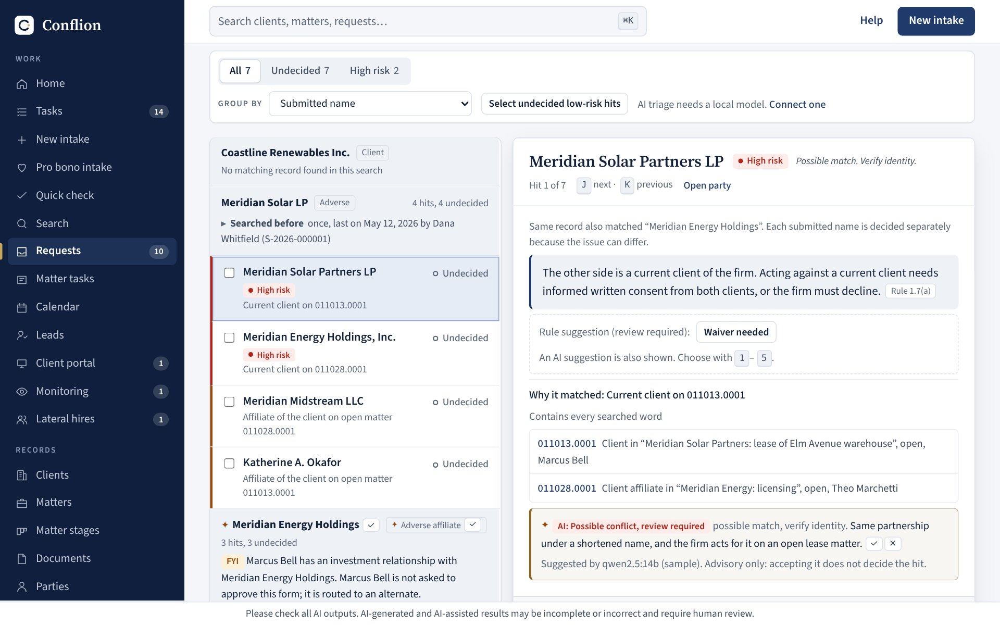
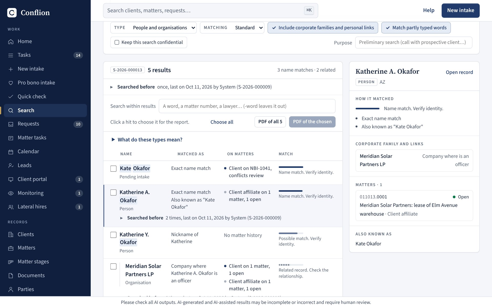
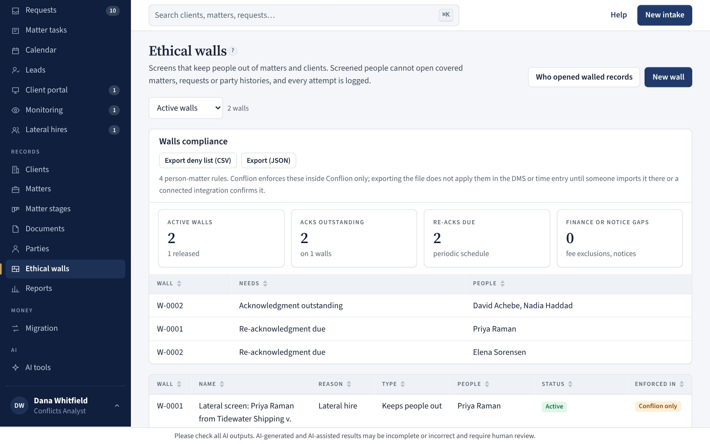
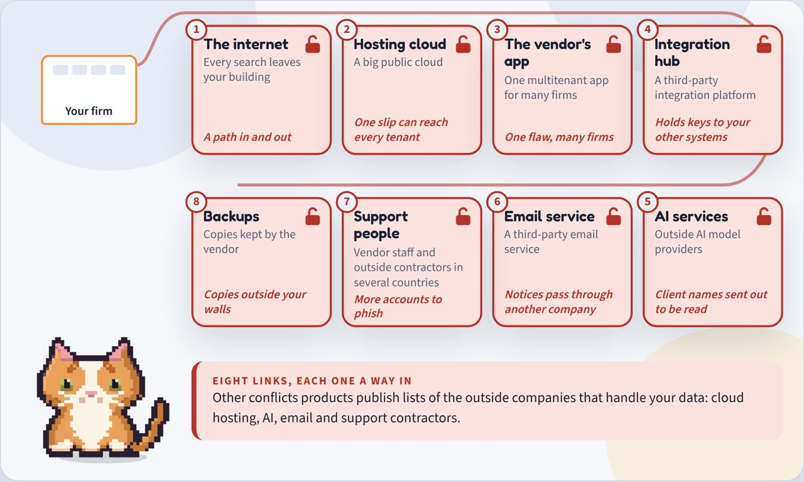

1.1Conflion
full-function firm software
Full-function software for running a law firm, built on a conflicts check and new-matter intake. One system on the firm's own server now covers matters and docketing, documents, time and billing, firm accounting links, people and CLE, client relationships, legal holds, the general counsel's office, IT and facilities, and a firm-wide AI layer that suggests while a person decides.
Try the demoConflion Rust EditionWatch Newton's full-process pitchFollow one matter, start to finishConflion Information SheetPrototype code
- Areas of the firm covered
- 12
- Firm roles modelled
- 7
- Passing tests (237 test files)
- 3,554
- Click-through checks in a real browser
- 360
- Synthetic parties benchmarked
- 3,000,000
- Competitors researched
- 14+

From a conflicts desk to the whole firm
Conflion began as conflicts and intake, and that is still where every matter starts. It now runs the rest of the firm on the same clients, matters and people, with one set of permissions applied on the server and one firm inbox that lists every decision waiting on each person, with a short morning brief for their role. The firm keeps its systems of record (billing, ledger, HR, document and device systems) and Conflion connects them.
Matters and docketing
A matter workspace with stages, tasks and a record timeline. Court deadlines counted from the rules for California, New York, Texas, Florida, Illinois, Nevada and federal appeals, each step citing its rule, with court notices read into the docket for a clerk to confirm and two-way sync with Outlook or Google calendars.
Documents
Matter folders made at opening, check-out and check-in with version comments, a profile on every document, email filed to a matter from Outlook, and saved searches for each person.
Time, billing and accounting links
Time entry with suggested task codes, pre-bills, bill review, invoices, LEDES exports, collections and a pricing desk. Approved journal entries post to the firm's own ledger in QuickBooks Online, Xero or Sage Intacct, with vendor bills, a bank feed, payroll imports, a cash forecast and partner draws.
People and CLE
One record per person from the HR export, bar admissions and CLE reminders, time away with cover, reviews and feedback, associate development, recruiting, joiners and leavers, and a book test drive for lateral hires before any offer.
Client relationships
Contacts and every conversation with them, key clients with account plans, feedback at matter close, events, mailing lists with consent, panels and RFPs, referral sources and a client portal. A contact is never mixed into the conflicts records.
Risk and the general counsel's office
Claims and incidents against the firm, insurance renewals, ownership due diligence on clients, a risk register and a promise ledger. Legal holds with acknowledgements and reminders, and a file destruction review that a hold always stops.
The office
An IT help desk, a register of the devices and software each person holds, meeting rooms, visitors, post and couriers, and off-site boxes tied to their matters. A leaver's laptop sits on the same checklist as their files and holds.
Knowledge and practice support
"Who has done this" from the firm's own matters, a clause bank with fallback positions and review dates, precedents, closing sets and signature packets (Conflion never signs), privilege logs and productions, and a staffing board.
Ask Newton and the AI tools
One question box for the firm whose answers link to the records behind them, and tools that watch the work: matter pulse, an obligation calendar, an early case read, a client risk radar on public sources, bench notes and rule change watch. Each shows its sources, and a person decides.
The problem
Before a firm takes a matter, it must check every party against everyone it has represented or opposed. Mid-size firms usually search their billing system letter for letter, so they miss parent companies, former names, nicknames and misspellings. Intake is a web form nobody connects to the search, and the enterprise tools are quote-only and installed by consultants.
The people involved have different needs. An associate submits the request, a conflicts analyst reviews the hits, practice leaders and general counsel approve, and finance opens the matter. Conflion gives each of seven roles its own view.
How the matching works
- Names are normalized: corporate suffixes stripped, abbreviations expanded, initials collapsed so "A.B.C. Holdings" finds "ABC Holdings".
- Three scorers combine: a phonetic key (Smith and Smyth), Jaro-Winkler for typos, and trigram overlap for spacing. Rare words weigh more than common ones.
- People match on surname first, then first name with 30+ nickname pairs (Kate and Katherine), aliases and former names.
- Strong matches expand two hops through corporate families and one hop through personal links such as spouses and officers.


Decisions that come from knowing the work
Risk follows the relationship
A name match alone means little. Being adverse to a current client on an open matter is high risk; a closed matter is medium; a match only through a personal link is capped below high. Related parties with no matter history are dropped as noise.
Rules are built in
Former clients point to Rule 1.9, prospective clients to Rule 1.18, lawyer relationships to California Rule 1.7(b) and (c) disclosures. Lateral hires get the 1.10, 1.11 and 1.12 analysis, and engagement letters check the California fee-agreement statutes.
Lawyers decide, software suggests
The local AI pre-sorts hits and drafts memos, but every AI-filled field carries a mark until a person confirms it. Restricted and walled data never reaches the model, and accepting a suggestion never decides a hit.
Least privilege by role
Approvers see a summary and a sign-off. Requesters see no firm records while they type. Walls are enforced in what the server sends each user, and every blocked attempt is logged.
An audit trail that proves itself
The log is append-only with a hash chain and a "Chain intact" check, and database triggers refuse edits. Matters cannot close until the final bill is issued and trust is at zero.
Speed for the analyst
J and K move between hits, 1 to 5 record a decision, Enter accepts the suggestion, and earlier decisions on the same party appear inline.
Under the hood: scale, outside data and a private model
Conflion now has about 279,000 lines of TypeScript (about 223,000 of source and 56,000 of tests), 3,554 passing tests across 237 test files, and 360 click-through checks that drive the real app in a browser before each batch of changes is merged. It runs two ways from the same code: a browser-only demo on fictional data, or a firm server with its own database, single sign-on, email and an AI model on the firm's own hardware.
Built for a firm with millions of names
Row-level storage, incremental sync and server-side search replaced loading everything into the browser. A repeatable benchmark on synthetic firms goes up to 3,000,000 parties, with a written account of what limited a large firm and what changed.
Outside entity data, watched nightly
A party can be linked to its public-register record: legal-entity data and SEC filings, including subsidiaries read from the latest annual report. A person chooses which names and parents or subsidiaries to add. A nightly job lists what changed for a person to accept or set aside, and cleared requests are flagged for another look.
Search that shows its coverage
Every search gets a number and shows what it covered. An empty or missing source is never shown as clearance, hits carry plain labels such as "likely same entity" instead of scores, and a no-match result is neutral, not green.
Faster hit review
A compact hit list with sticky party headers, identity review kept apart from the conflict assessment, and follow-ups tracked until resolved. The suggested order is learned locally from the firm's own past decisions, shows its factors and counts, is off by default, and never hides a hit or records a decision. An offline evaluation of the ranking is written up in the repo.
Confidentiality and lateral hires
Confidential matters are searched in batch without being revealed: the user is told there is a confidential match and nothing more. Lateral hires get a pre-start checklist with distinct pending, blocked, not-applicable and complete states, each backed by evidence.
Compliance records
Required documents per request, a summary of each conflict, and tracking for business-associate agreements, joint-representation consents and founder acknowledgements.
Measured speed
- Name search (median): 77 ms to 1.3 ms at 50,000 parties; 535 ms to 5.3 ms at 250,000.
- Submitting an intake: 1.5 s to 37 ms at 50,000; 8.0 s to 20 ms at 250,000.
- After a colleague's change, a browser downloads 1 KB instead of reloading 200 KB.
- Server memory at 250,000 parties: 5.4 GB down to 1.8 GB.
All figures come from a benchmark script run on synthetic firms.
A model that stays on the firm's hardware
The AI runs through Ollama or any OpenAI-compatible local server, so client names never leave the building. It triages hits with a short reason, finds parties in a matter description or pasted email (any name that is not in the text is discarded), drafts a conflicts memo from the recorded decisions only, and suggests column mapping for imports. Every use is written to the audit log with the model name. The ranking model is a separate local statistical fit that uses no AI provider.
Teaching and testing inside the app
- Role-based walkthroughs (open a matter, prepare a request, approve, clear, get your firm live) that point at things but never click, submit or decide.
- A first-week checklist that ticks itself off from what the person actually does, with tests that limited roles are never shown a step for a page they can't open.
- A test environment on a fictional firm, marked by a striped banner on every page. It never writes to live data, sends email or calls an outside AI provider.
Support without sharing firm data
An administrator builds a support bundle of counts, settings switches, versions and error messages with names replaced by placeholders, reads it, then saves it. Nothing is sent automatically, and saving is written to the audit trail. To see a problem happen, support uses a test firm of made-up records at the same size and shape. The live app opens empty, with no sample data, and the desktop app ships for Windows, macOS and Linux with a first-run setup.
Market research
- Comparison with the market. 14+ conflicts and intake products compared with Conflion, feature by feature, from public sources.
